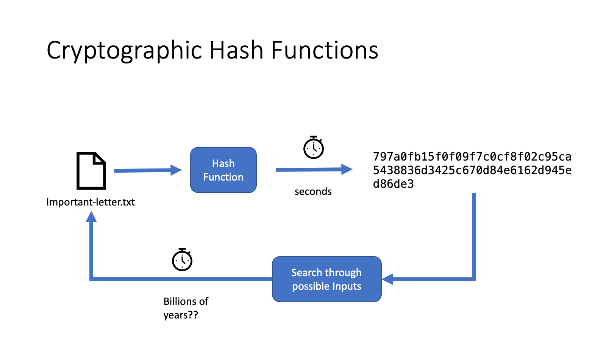
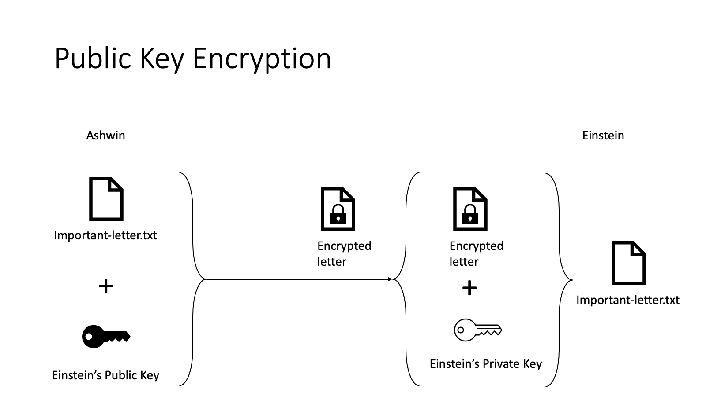
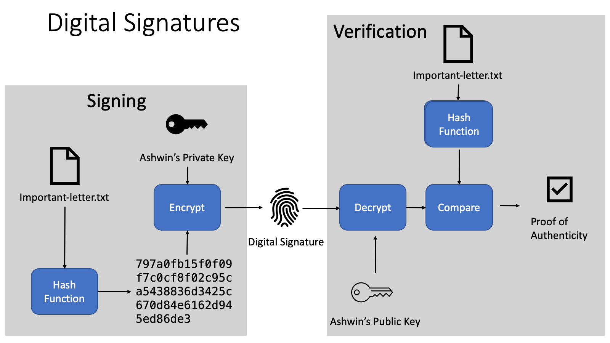
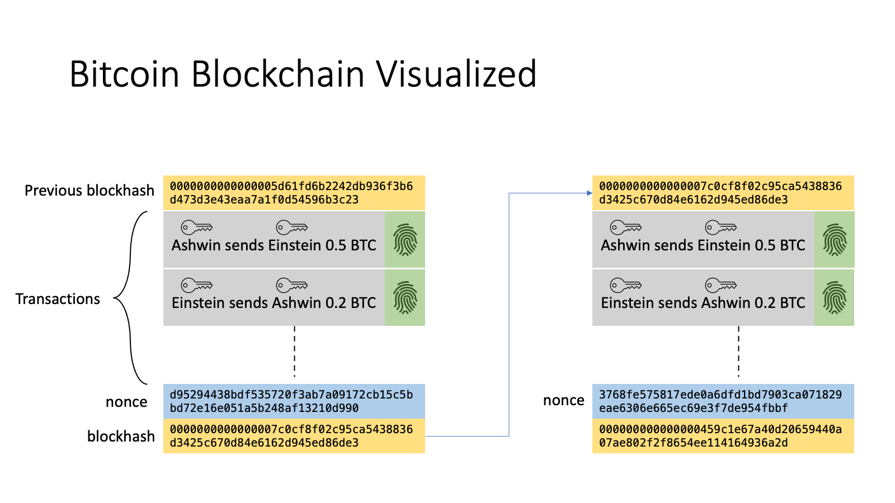

Blockchains as I Understand It
Summary of my Understanding of Blockchains and Smart Contracts
 Photo by Nenad Novaković on Unsplash
Photo by Nenad Novaković on Unsplash
Introduction
The first half of 2022 has not been kind to the world of crypto. Everyone expects a recession, cryptocurrency valuations are crashing; crypto firms file for bankruptcy every other week and many are predecting a “crypto winter”. As bad as things may seem, many would argue that the hype driven valuations crypto-currencies and associated projects were unsustainable, and had to come down eventually. Regardless, now that a lot of the hype and noise have faded, I feel that it is a good time to dive into the technical aspects of crypto currency technology with an academic mindset and learn about how it works.
Blockchains and Smart Contracts
The mathematics behind cryptocurrencies and blockchains have fascinated me since since 2012 - when I first heard about Bitcoin. Bitcoin pioneered the idea of a decentralized ledger of transactions of virtual tokens. However, modern blockchains have come a long way since then. In addition transactions of virtual tokens, blockchain today allow execution of arbitray logic on the blockchain - i.e., smart contracts. The mathematics of cryptography is what makes these features of blockchains possible.
Cyrptographic Hash Functions
Cryptographic hash functions (CHFs) are mathematical functions take data as input and produce a “fingerprint” that is pre-image resistant - i.e. it is difficult to know what you put into the function given the output of the function.

CHFs also have a few other properties. It’s difficult to find two inputs that have the same hash value and small changes to the file results in large changes to the hash.
~ % echo "Hello" | md5sum
09f7e02f1290be211da707a266f153b3 -
~ % echo "Hellp" | md5sum
a907206b6e6bf63124d4fa1e499eac8c -
Public Key Cryptography
Public key cryptography lies at the foundation of how many blockchains work. These cryptographic systems uses two sets of numbers or “keys” for each person who wants to communicate. One key is kept a secret while the other is visible to everyone. If I want to send an encrypted message to Albert Einstein, I use a mathematical function that takes Einstein’s public key and the message as input and produces an encrypted message. The encrypted message will look like random noise to anyone except Einstein (well his computer at least) who can use his secret key with a mathematical decryption function to decrypt the message.

Digital Signatures
Public / Private keypairs can also be used to produce what are called digital signatures that prove that the person who owns the private key has written (or at least has signed) a message. Digital signature schemes first generate a hash of a document using a cryptographic hash function and then encrypt the hash using your private key. Anyone else can then verify that it is indeed signed using your private key by decrypting the signature using your private key and comparing it to the hash of the document.

How Bitcoin Works, Briefly
Each transaction on the Bitcoin network is written in a small scripting language. Bitcoin wallets - which are essentially a secret / public keypair - sign and send transactions to computers on the internet that are running code to verify blocks of tranasactions. These computers batch together transactions into blocks and try to find a number to add to a block of transactions (called a nonce) so that the cryptographic hash (SHA-256) of the block and the nonce has a specific number of leading zeroes. Finding the nonce is difficult to do because the brute-force method of searching through all possible combinations is the best way we know.
However, because of how cryptographic hashes work, it is easy to verify that the hash of the block with the nonce has the required number of leading zeroes. Therefore, the hash is proof that someone has done the work to verify the transaction. In the Bitcoin network, each block also contains the hash of the previous block so that we know the order in which the blocks were verified. The official ledger of transactions is the longest chain of blocks that have been verified by computers (miners) this way. In return for verifying transactions, the wallet that first verifies a block is rewarded with the fees of all the block’s transactions and a small amount of newly minted Bitcoin.

How Smart Contracts Work, Briefly
Smart contracts are an extension of the blockchain to transactions other than sending tokens between accounts. Bitcoin’s scripting language is intentionally limited (i.e. it is not Turing Complete). Blockchains like Ethereum implement a Turing complete scripting language that allows the contract to store state and perform arbitrary calculations. This lets you make more complicated things on the blockchain. So a smart contract is essentially code which instead of executing on your computer is executed on other computers along with some cryptographic calculations to verify what the code did. This computation costs money (miners or validators need to pay for electricity) and gas fees are the reward that validators on the blockchain get for executing the smart contract logic.
Summary
Blockchains essentially solve the problem of carrying out calculations and maintainings ledgers in a decentralized, trustless way. Rather than trusting a central authority (like a bank) to honestly keep track of your money, blockchains rely on mathematical rules which when correctly followed ensure that the probability of the ledger of transactions being honest is very high. However, the cost of a trustless system if a lack of recourse if you do not follow the rules. For instance, if your private keys are leaked you cannot retrieve your tokens from the thief because there is no “central authority” who can restore your wallet.
References
- https://www.cbsnews.com/news/celsius-bankruptcy-filing-most-activity-still-paused/
- https://fortune.com/2022/07/08/voyager-crypto-bankruptcy-protection-next-steps-life-savings/
- https://www.forbes.com/sites/jonathanponciano/2022/07/14/crypto-winter-watch-all-the-big-layoffs-record-withdrawals-and-bankruptcies-sparked-by-the-2-trillion-crash/?sh=4eb8957020f5
- https://www.youtube.com/watch?v=bBC-nXj3Ng4&t=906s
- Bitcoin Scripting Language
- https://www.youtube.com/watch?v=GU4igNeYr-Q
- https://en.wikipedia.org/wiki/Cryptographic_hash_function
- https://www.docusign.com/how-it-works/electronic-signature/digital-signature/digital-signature-faq
Ashwin Narayan
Robotics | Code | Photography
I am a Research Fellow at the National University of Singapore working with the Biorobotics research group